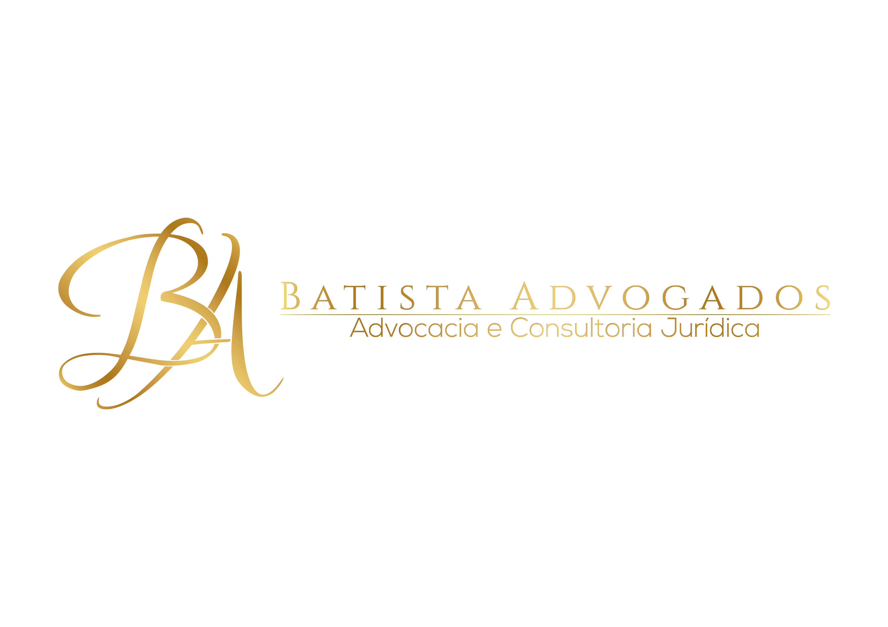

Você foi demitido injustamente ou sofreu acidente de trabalho?
Seja por acidente, demissão indevida ou problemas no ambiente de trabalho, você pode ter direito a indenização, estabilidade, benefícios e reparações que vão além do INSS..

Seja por acidente, demissão indevida ou problemas no ambiente de trabalho, você pode ter direito a indenização, estabilidade, benefícios e reparações que vão além do INSS..
Proteja Seus Direitos Trabalhistas
Nossos advogados especializados atuam em diversas situações no trabalho, garantindo ao colaborador direitos como indenizações, estabilidade no emprego, benefícios previdenciários e reparação por danos, seja por demissão indevida, problemas no ambiente de trabalho ou outras situações.
Se você sofreu acidente e está enfrentando dificuldades com a empresa ou com o INSS, nossa equipe está pronta para orientar, esclarecer seus direitos e buscar a justiça necessária.
Realizamos cálculos detalhados para apurar valores de indenizações, pensões, adicionais de insalubridade, periculosidade e demais benefícios que o trabalhador acidentado pode ter direito.
O processo inicia-se com a escuta detalhada do trabalhador, avaliação do acidente ocorrido e levantamento dos documentos médicos, CAT (Comunicação de Acidente de Trabalho) e demais provas necessárias.
Antes da ação judicial, busca-se uma solução direta com a empresa ou seguradora, visando garantir direitos como estabilidade, auxílio-doença acidentário, indenizações e demais benefícios.
Se não houver acordo, ingressamos com a ação judicial para pleitear indenizações, pensão vitalícia (quando cabível), reintegração no emprego e reparação de todos os prejuízos sofridos.
Somos um escritório de advocacia especializado em causas trabalhistas, com ênfase em
acidentes de trabalho e doenças ocupacionais.
Nosso propósito é garantir que cada trabalhador tenha seus direitos respeitados, desde o
primeiro atendimento até a conclusão do processo.
Com uma equipe experiente e dedicada, oferecemos atendimento humanizado, clareza na
comunicação e estratégias jurídicas sólidas para assegurar a reparação justa, indenizações,
benefícios previdenciários e a proteção da estabilidade no emprego.
Aqui, sua história é ouvida, sua situação é respeitada e seus direitos são defendidos com
rigor e responsabilidade.
Acidente de trabalho é qualquer ocorrência que cause lesão, doença ou até morte, relacionada diretamente à atividade profissional. Inclui também acidentes no trajeto entre casa e trabalho.
Sim. O trabalhador que sofreu acidente de trabalho tem direito à estabilidade de 12 meses após o retorno às suas atividades, desde que tenha recebido auxílio-doença acidentário do INSS.
Sim. Além dos benefícios do INSS, é possível pleitear indenização na Justiça quando há negligência ou responsabilidade do empregador.
É altamente recomendado. O advogado trabalhista especializado garante que seus direitos sejam respeitados e que você receba todos os benefícios e indenizações devidas.